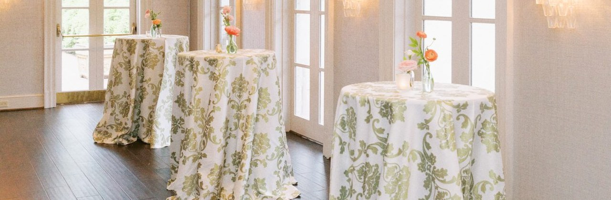

The problem in one picture

The photo is tall; the banner is wide. The original frame (left) is about three units tall for every two wide. The banner slot is about three units wide for every one tall — the strip can only ever show a thin horizontal slice of it.
Which slice, and how it’s treated, is the whole decision. The four candidates below are the same photo — only the treatment changes.
The four candidates — rendered for real
Each strip below is the actual banner shape (about 3:1), built from the real photos — not a sketch.
Straight crop
Today’s behavior
Zero work — but the band is an accidental slice: flowers, table edges and the room’s height are lost, and every new photo needs its crop point hand-checked.
Smart landscape band

The best-looking single image — a deliberate band with all three tables and their florals. But it’s hand-tuned per photo: someone must choose the band for every image, every time.
Blurred-fill
RecommendedThe whole photo survives — chandelier to floor — on an elegant blurred wash of its own colors. Fully automatic: works on every portrait photo with no per-image tuning. The cost: the photo itself reads smaller inside the band.
Paired portraits

Two verticals make one band — detail beside context, a classic editorial pairing. Each half crops far more gently than the full-width slice. But it needs two good photos per color, and some colors only have one.
Considered, not rendered: AI scene extension No render
“Outpainting” — AI generatively extends the photo sideways, inventing more ballroom left and right until the frame is wide. It can look seamless, and it’s a real option for a hero image or two. But it’s the costly path: every result needs human review, and it carries the same line we drew in the AI recolor brief — the AI must never redraw the damask itself. Anywhere the invented area touches linen, the pattern can drift from the fabric your customer actually receives. A per-image tool for special cases, not a house style.
Today’s pick
Which treatment becomes the house style for in-place banners? Notes ride along with the decision.